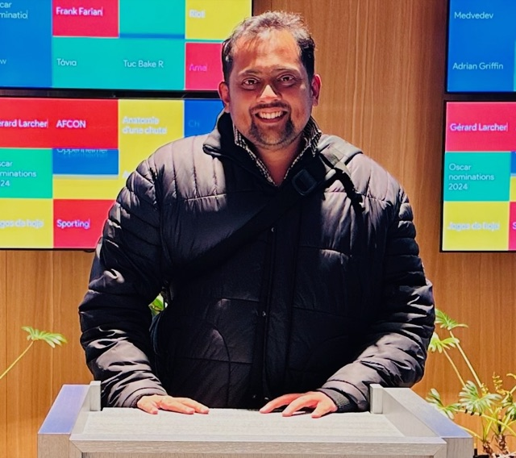

Consulting
Stuck on a data or business challenge? Sometimes you just need someone who has seen it before. Forecasting, pricing, modelling and GenAI, with honest, practical advice.
Data Science Leader & Statistician
I turn messy data into decisions. 16+ years across India and Switzerland, leading a team of 10+ data scientists, and happy to help with consulting, advice, training and talks in Statistics, R, Machine Learning and GenAI.

About
They're statistics, clarity and trust problems.
I'm a statistician turned data science leader. Today I lead a team building Automated Valuation Models (AVMs) for Swiss real-estate finance, a regulated, business-critical setting where models have to be accurate and explainable.
My strengths are statistics at depth (M.Sc. Statistics, mixed and hierarchical models at ETH Zurich), production R (internal packages served as REST APIs, Shiny apps, automated reports) and a growing practice in GenAI and AI agents. I also run workshops and talks at universities across Kerala.
English · Hindi · Bengali · Malayalam
How I can help
Stuck on a data or business challenge? Sometimes you just need someone who has seen it before. Forecasting, pricing, modelling and GenAI, with honest, practical advice.
Hands-on sessions in Statistics, R Programming, Machine Learning, and GenAI and AI Agents, plus Data Literacy for managers. For institutions, teams and freshers. Online or in person in Kerala, from one day to multi-week programmes.
Conferences, institutions and events. Practical statistics, honest GenAI lessons and what it takes to lead data teams.
Expertise
Experience
IMMO Information Technology · Swiss real-estate finance (IAZI AG / CIFI SA)
Own delivery of data and AI products end to end, from a blank page to a shipped product. Lead a 10+ member team, own the core R products and AVMs through deployment, and build the team's first AI agents with Microsoft Agent Framework and MCP tools.
IMMO Information Technology
Grew the data science team to 10+, developed AVMs and owned the legacy hedonic models through validation and production. Helped launch the model backtesting report, a client product supporting banks' internal model validation.
IAZI AG / CIFI SA · on-site in Switzerland
Built hedonic and ML models embedded in flagship AVM products, hardened R for production and led the India-based team supporting Swiss operations.
Genpact · Bengaluru
Retail and CPG analytics: assortment, pricing and promotion analytics for global FMCG clients using SQL and R.
IMMO Information Technology · Panaji, Goa
Where the journey began: regression-based valuation models and data pipelines on Swiss property data with R and SQL.
Arbitron India (now Nielsen Audio) · Kochi
Media audience measurement and market-research analytics with SPSS.
Projects
A free R Shiny chart builder. Drag and drop to build charts, no R install needed.
Collaborating agents using LangGraph and CrewAI with planning, reasoning and tool use to solve compound tasks.
A prompt-chained summariser that turns raw customer reviews into structured pros and cons.
Education
Certifications
Happy to help. Send me a message.